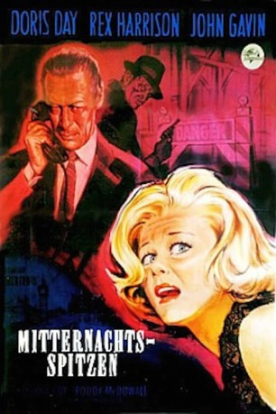
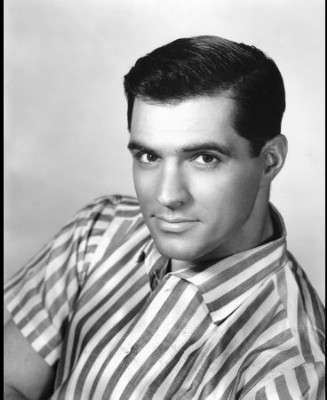
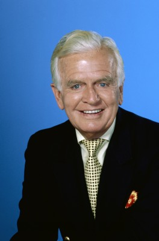
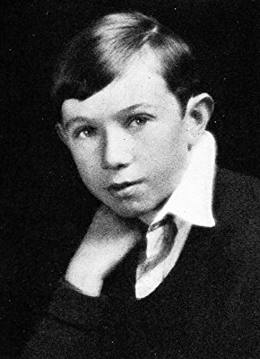

#8796 Mitternachtsspitzen
Alternativ: Midnight Lace
Auszeichnungen: für 1 Oscars nominiert
 
 IMDB-Wertung: 6.9 / 10
IMDB-Wertung: 6.9 / 10  Metascore: 0
Metascore: 0 
Die frisch verheiratete Kit Preston erhält mehrere Morddrohungen. Zunächst glaubt ihr keiner, doch dann wird Kit beinahe von einem Stahlträger erschlagen und bleibt im Aufzug stecken. Ihr Ehemann Anthony wird jetzt auch misstrauisch.
Jahr: 1960
Dauer: 108 Minuten
FSK: 12
Land: USA Studio: Universal International®Tonspuren:
Untertitel: Deutsch,
Auflösung: 1080p (1920x960) Größe: 8960 MB
Genre: Thriller, Drama, Mystery
Regisseur: David Miller
Drehbuch: Ivan Goff
Soundtrack: Frank Skinner
Darsteller:
 Doris Day als Kit Preston
Doris Day als Kit Preston- Rex Harrison als Anthony Preston
-  John Gavin als Brian Younger
- Myrna Loy als Aunt Bea
 Roddy McDowall als Malcolm
Roddy McDowall als Malcolm- Herbert Marshall als Charles Manning
- Natasha Parry als Peggy
 Hermione Baddeley als Dora
Hermione Baddeley als Dora- John Williams als Inspector Byrnes
- Richard Ney als Daniel
 Anthony Dawson als Ash
Anthony Dawson als Ash Rhys Williams als Victor Elliott
Rhys Williams als Victor Elliott-  Hayden Rorke als Dr. Garver
 Doris Lloyd als Nora Stanley - Housekeeper
Doris Lloyd als Nora Stanley - Housekeeper- Elspeth March als Woman
 Frank Baker als Board Member (uncredited)
Frank Baker als Board Member (uncredited) Paul Collins als Kevin (uncredited)
Paul Collins als Kevin (uncredited)- Terence de Marney als Tim (uncredited)
- Anthony Eustrel als Luggage Salesman (uncredited)
 Franklyn Farnum als Ballet Audience Spectator (uncredited)
Franklyn Farnum als Ballet Audience Spectator (uncredited)- Gwenllian Gill als Nurse (uncredited)
 Stuart Hall als Maitre D' (uncredited)
Stuart Hall als Maitre D' (uncredited) Kenner G. Kemp als Pub Patron (uncredited)
Kenner G. Kemp als Pub Patron (uncredited) Colin Kenny als Pub Patron (uncredited)
Colin Kenny als Pub Patron (uncredited)- Jack Livesey als Policeman (uncredited)
 Harold Miller als Nightclub Patron (uncredited)
Harold Miller als Nightclub Patron (uncredited) Sol Murgi als Commuter at Terminal (uncredited)
Sol Murgi als Commuter at Terminal (uncredited)-  Monty O'Grady als Nightclub Patron (uncredited)
- Richard Peel als Tommy (uncredited)
 Leoda Richards als Nightclub Patron (uncredited)
Leoda Richards als Nightclub Patron (uncredited) Scott Seaton als Man on Sidewalk (uncredited)
Scott Seaton als Man on Sidewalk (uncredited)- Joan Staley als Malcolm's Date at Opera (uncredited)
 Bert Stevens als Ballet Audience Spectator (uncredited)
Bert Stevens als Ballet Audience Spectator (uncredited)- Tom Toner als Porter (uncredited)
- Richard Lupino als Foster
- Peter Adams als Man at American Consulate
- Rex Evans als Basil Stafford
- Brandon Beach als Ballet Audience Spectator (uncredited)
- Oliver Cross als Board Member (uncredited)
- Roy Dean als Harry (uncredited)
- Herbert Deans als (uncredited)
- Jack Deery als Pub Patron (uncredited)
- James Fairfax als Bus Driver (uncredited)
- Alex Finlayson als (uncredited)
- Peter Fontaine als Workman (uncredited)
- James Forrest als Doorman (uncredited)
- Joseph Gershenson als Orchestra Conductor (uncredited)
- Kenneth Gibson als Board Member (uncredited)
- Michael Gibson als Cabby (uncredited)
- Herschel Graham als Ballet Audience Spectator (uncredited)
Datei: X:\1960\Mitternachtsspitzen (1960, FSK12, 1920x960).mkv seit 30.04.2018
Festplatte: HD 1900-1970
 Es gibt insgesamt 21 Filme in der Gruppe '1960'
Es gibt insgesamt 21 Filme in der Gruppe '1960'